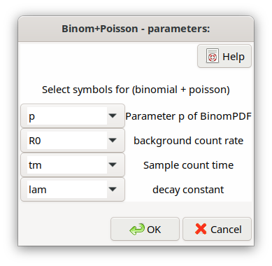

4.10. Measuring a short-lived radionuclide with comparably long counting duration¶
4.10.1. Basic principles¶
If the product \(\lambda t_{m}\) becomes significantly larger than 0.1, or even \(\geq 1\), when measuring the activity of a short-lived radionuclide, the Poisson distribution of the gross counts is only an approximation. A feature in this case is that the gross counts distribution is a superposition of a binomial (sample contribution) and a Poisson distribution (background). A characteristic of binomially distributed sample contribution counts is that the variance of the gross counts is smaller than the gross counts itself, i.e., it is smaller than the variance of Poisson distributed gross counts. The binomial distribution for detected sample counts in this context has been applied in the literature (see e.g., Mathews et al, 1979; Spyrou et al., 1981; Salma and Zemplén-Papp, 1992; Gilmore, G., 2008; Semkow, 2007).
Let \(N\) be the number of atoms existing at the begin of the measurement. The product of the probability \(\left( 1 - e^{- \lambda \cdot t_{m}} \right)\) for the decay of an atom during the duration \(t_{m}\) and the probability \(\varepsilon\) of detecting this decay, constitutes one parameter \(p = \varepsilon \cdot \left( 1 - e^{- \lambda \cdot t_{m}} \right)\) of the binomial distribution; \(N\) is the other. \(N\) relates to the activity \(A\) by \(A = \lambda \cdot N\).
The literature mainly restricted the consideration to the binomial distribution of the sample counts contribution. However, the distribution of the gross counts (including background also) is also required. It can be found by folding two discrete distributions, of the binomial and the Poisson variables X und Y:
X: |
\(P_{Bi}\left( x|N,p \right) = \binom{N}{x}p^{x}(1 - p)^{N - x}\) |
Y: |
\(P_{Po}\left( y|R_{0},t_{m} \right) = \frac{\left( R_{0}t_{m} \right)^{y}e^{- R_{0}t_{m}}}{\Gamma(y + 1)}\) |
Z = X + Y |
\(P_{BiPo}(X + Y = Z) = \sum_{k = 0}^{z}{P_{Bi}\left( X = k|N,p \right)P_{Po}\left( Y = z - k|R_{0},t_{m} \right)}\) |
With \(x \equiv k\), \({y \equiv n}_{0m} = R_{0}t_{m}\) and the gross counts \(n_{g} = z = x + y = k + n_{0m}\), it follows:
Note
Strictly speaking, the form of the \(P_{BiPo}\) distribution as just defined is valid only for integer values of the binomial parameter \(N\). For non-integer values the binomial distribution part is not normalized to one. This problem can be avoided, if Eq. (4.10.1) is replaced by a special numerical function, which is expressed by a hypergeometric distribution using the so-called Kummer confluent hypergeometric function. This form of distribution allows to apply also non-integer values of \(N\). Its computation is also faster than applying Eq. (4.10.1), especially for larger values of \(N\). This version of the \(P_{BiPo}\) distribution is actually applied in UncertRadio.
For a value of the gross count number to be generated by Monte Carlo simulation one binomial distributed value (sample contribution) and one Poisson-distributed value (background contribution) are generated. Both values are added to obtain the gross count number value. However, this follows only that procedure given by Eq. (4.10.1) (discrete \(k\) values), because the binomial-distribution random number generator can only produce integer values, while the Poisson random numbers (background contribution) are continuous. For a small number of gross counts, the shape of the distribution is therefore a series of overlapping peaks, one for each binomial integer value.
4.10.2. Aspects of uncertainties and evaluation¶
The expectation values and the variance of the number \(n_{g}\) of gross counts are calculated by moments of the \(P_{BiPo}\) probability density:
The corresponding values of the binomial distribution are
which allow to replace in equations (4.10.2) and (4.10.3) the product \(Np\) by \(k\).
By inserting \(k = n_{g} - n_{0m}\), which can be interpreted as the number of net counts, into Eq. (4.10.3), it follows:
Two quantities being important for uncertainty propagation are the gross and the net count rates. They must be based on directly measured quantities:
Gross count rate:
Net count rate:
One finds for .. math:: binomialoverset{rightarrow}{}Poisson equiv p rightarrow 0
Relation between activity and \(\mathbf{N}\)
For the activity \(A_{0} = \lambda N\) existing at \(t = 0\) a number \(k\) of counts are detected during the counting duration \(t_{m}\), originating from the radionuclide decay. It is obtained as:
It follows then from \(R_{s} = k/t_{m}\) :
An equation for \(A_{0}\) follows from the equation for the count rate \(R_{s}\) (\(f_{3}\) is a correction for the decay during the counting duration)
Activity concentration \(\mathbf{a}\):
The relation \(A_{0} = \lambda N\) is used for deriving the activity concentration \(a\):
Based on this equation, the uncertainty is calculated as usual in UncertRadio.
4.10.3. An example case¶
After Ac-228 (half-live (6,15 \(\pm\) 0,03) h) is radiochemically separated, it is measured during 8 h. For this measurement setup the product \(\lambda_{Ac228}t_{m}\) is 0.9017. As this is significantly above 0.1, nearly 1, the Ac-228 contribution to the measured gross count rate is considered to follow the binomial distribution. The number of gross counts therefore follow the sum of binomial- and Poisson-distributed contributions.
Symbols and values of input quantities:
(taken from the UR2 project Ac228_binomial_EN.txp)
\(N\)
|
Number of atoms existing at the begin of measurement
(\(A = \lambda N\))
|
|---|---|
\(p\)
|
\(= \varepsilon\left( 1 - e^{- \lambda t_{m}} \right)\):
parameter of the binomial distribution:
\(Bin\left( x|N,p \right) = \binom{N}{k}p^{k}(1 - p)^{N - k}\)
(\(0 \leq k \leq N\)) (1)
\(p =\)0,23764104; \(u(p) =\) 0,004982491
Note: If the measurement of duration \(t_{m}\)does not
start at 0, but at \(t_{1}\), the parameter \(p\) is
extended to:
\(p = e^{- \lambda t_{1}}\varepsilon\left( 1 - e^{- \lambda t_{m}} \right)\)
|
\(\varepsilon\)
|
detection probability: 0,4 \(\pm\) 0,0083;
|
\(\lambda\)
|
decay constant of Ac-228, half-live t 6,15 h \(\pm\) 0,03 h;
\(\lambda =\)0,1127069 h-1; \(u(\lambda) =\)
5,497896E-04 h-1
|
\(t_{m}\)
|
duration of the Ac-228 measurement (8 h), being not small
compared to the half-live
|
\(R_{0}\)
|
background count rate, measured with the duration
\(t_{0}\)= 20 h: 50 counts/20 h = 2.50 h-1;
|
\(n_{g}\)
|
number of gross counts: 50 counts within 8 h;
|
\(w_{g0}\)
|
factor converting the activity (Bq) into an activity
concentration
|
Results obtained by these data:
\(n_{0m} = R_{0}t_{m} = 20\) counts
\(k = n_{g} - n_{0m} = 30\) counts
\(N = k/p = 126.2408\) counts
\(R_{s} = 30/8\ h^{- 1} = 3.75\ h^{- 1}\)
\(u(R_{s}) = \sqrt{30 \cdot (1 - 0.23764104)}/8 = 0.5978\ h^{- 1}\ \)
\(u(ng) = \sqrt{n_{g}(1 - p) + n_{0m}p} = \sqrt{50 \cdot (1 - 0.23764104) + 20 \cdot 0.23764104} = 6.5476\)
\(A_{0} = 0.112707 \cdot 126.24 = 14.228\) Bq
further results:
w = 3.79418826 u(w)= 7.90495202E-02 (w0=1)
a = 14.2282066 u(a)= 3.39566064
Sum(Product(Bi x Po)):
mean(BiPo)= 50.0000000 var(BiPo)= 42.8707695
expected Var: Ng*(1-p) + N0/t0*tm*p= 42.8707695
Note: The variance of the gross count number (42.871) is smaller than the gross count number (50.0), i.e., smaller compared to a pure Poisson distributed gross count number. By decreasing the detection probability by a factor of 10 results in a 10-fold smaller value of \(p\), i.e., \(p = 0.0237641\). Under this assumption the binomial distribution can be approximated by a Poisson distribution. Then, approximately the relation “variance of gross counts = gross counts“ would be to be expected. This is confirmed by Eq. (4.10.6), by which the variance value results in \(50 \cdot 0.97624 + 20 \cdot 0.0237641 = 49.287\ \), which is already close to the value of 50 to be expected for the “Poisson plus Poisson“ case.
4.10.4. Implementation in UncertRadio¶
The first step for invoking the specaial procedure for short half-lives is to select under the TAB “Values, Uncertainties” the distribution type “Binom+Poiss“ for the gross counts number symbol.
Thereafter, four further parameters are to be selected: \(p,\ \ R_{0},\ t_{m}\ and\ \lambda\). This can be achieved by invoking a dialog via the menu Set binomial/poisson case:
This dialog may also be invoked by the program itself while establishing such an UR project.
The symbol numbers of the four parameters p, R0, tm, lambda, are stored in the txp file, e.g., as “BinPoi=8 10 12 9“.